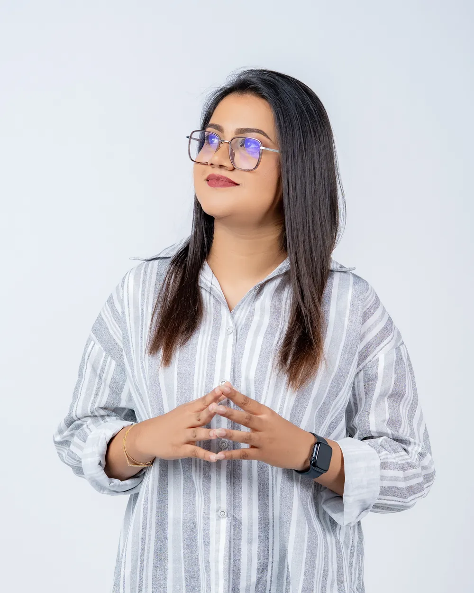
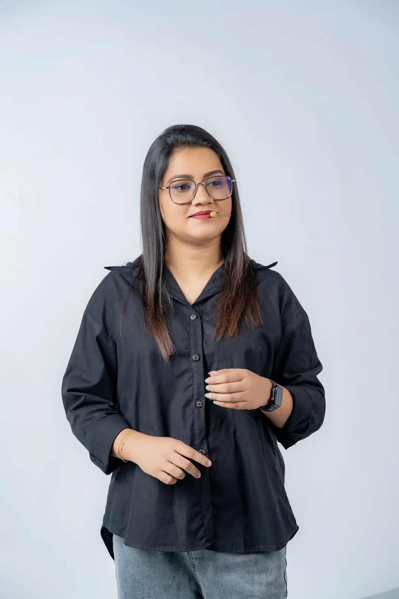
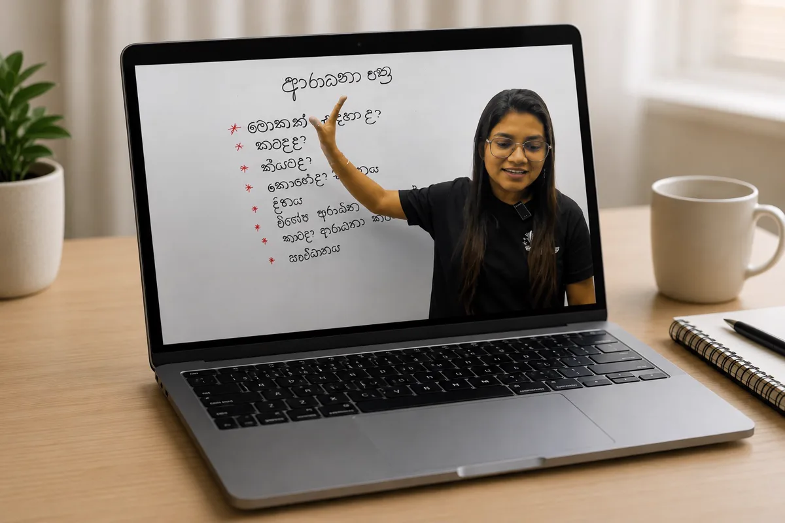

Theory Class
සම්පූර්ණ විෂය නිර්දේශය සිතුවම් සහ විශේෂ ක්රම ඔස්සේ සරලව, ක්රමානුකූලව ඉගැන්වීම.
සිංහල භාෂාව හා සාහිත්යය
සාහිත්ය රසාස්වාදය

Bachelor of Arts Special · University of Peradeniya
ඔබේ ගුරුතුමිය අ.පො.ස. උසස් පෙළ කලා අංශයෙන් A සාමර්ථ්යය 3ක් ලබාගෙන පේරාදෙණිය විශ්වවිද්යාලයේ ශාස්ත්ර පීඨයට ඇතුළත් වී, පන්ති සාමර්ථ්යය සහිතව විශේෂ උපාධිය ලබාගෙන ඇත.
සාමාන්ය පෙළ සිංහල භාෂාව හා සාහිත්යය සහ සිංහල සාහිත්ය රසාස්වාදය යන විෂයන් දෙකෙහි දේශකවරියක ලෙස, ඉතා සාර්ථක ඉගැන්වීම් රටාවක් සහ ක්රමවත් වැඩපිළිවෙළක් තුළින් කෙටි කාලයක් තුළ දී ලංකාව පුරා විහිදී සිටින සිසුන් රාශියකට සිය සාමාන්ය පෙළ ප්රතිඵල ලේඛනයේ A සාමර්ථ්යය 2ක් ලබාගැනීම සඳහා එක් ගුරුවරියක ලෙස මඟපෙන්වීමට සමත්ව ඇත.
අපගේ YouTube නාලිකාවට පිවිසීමෙන් සහ පසුගිය ප්රතිඵල සමාලෝචනයෙන් ඉගැන්වීම් රටාවේ සාර්ථකත්ව පිළිබඳව පැහැදිලි අවබෝධයක් ලබාගැනීමට ඔබට හැකිවනු ඇත.
Official YouTube ChannelSinhala With Kaushalya Wicramarachchi2022 සිට 2025 දක්වා අ.පො.ස. සාමාන්ය පෙළ විභාගයේදී අපගේ සිසුන් ලබාගත් ප්රතිඵල.
Tap a result sheet to view it full size
2022 සිට 2025 දක්වා අපගේ සිසුන් ලබාගත් A සාමර්ථ්යය ගණන
| Year | Sinhala Language | Sinhala Lit |
|---|---|---|
| 2022 | A 22 | A 10 |
| 2023 | A 60 | A 52 |
| 2024 | A 63 | A 88 |
| 2025 | A 77 | A 129 |
අපගේ වැඩපිළිවෙළ පිළිබඳ සිසුන්ගේ අදහස්.
ඉස්කෝලේ ටීච රසාස්වාදය කියලා දුන්නා අපි හොඳට නිදාගත්තා. අද ටීච අපිට කියලා දුන්නා එක තප්පරයක් නිදාගන්න හිතුනෙවත් නෑ.
තැන්කිව් ටීච, අද ගොඩක් ලොකු දැනුමක් ගත්තා.
ගුරුතුමියනි, ඔබ අපට අකුරු පමණක් නොව, ඒ අකුරුවල අරුතත්, ජීවිතයේ අගයත් උගන්වා දුන්නා. කවියත්, කතාවත් අතරින් අපි සිතන්න, හැඟෙන්න, සහ හොඳ මනුෂ්යයන් වෙන්න ඉගෙනගත්තේ ඔබ නිසා. සිනහවෙන්, සෙනෙහසෙන්, ඉවසීමෙන් අපට මඟ පෙන්වූ ඔබ අපගේ ජීවිතයේ අමතක නොවන ගුරුතුමියක්.
Thank you very much for your help Madam
Thank you very much for your dedication and for everything you did for our great results, teacher. (8h seminars, online sessions, MCQ sessions, Final shot sessions, batch party and also the free online sessions)
You’re not a teacher who only teaches lessons. You taught lessons for our lives...
You’re my great motivator. Finally, thank you so much, teacher. Love you forever.
Teacher ඇත්තටම හරි අහම්බෙන් හම්බවුණු සුපිරි ගුරුවරියක්... ළමයින්ට හොද අවධානයක් දෙන යාලුවෙක් වගේ teacher කෙනෙක්... Teacherge vibe එක නියමයි.. ගොඩක් පින් ටීචර් ඒ දුන්න දැනුමට...
ටීචර්ගෙ අනාගතයට හදවතින්ම සුබ පතනවා ටීචර්.. ගොඩක් දේවල් ටීචර්ගෙන් මම ඉගෙන ගත්තා... ස්තූතියි ගොඩාරියක්.
මිස් එක්ක වැඩ කරපු කාලය ඉතා එළදායි උනා. වෙලාව ගෙවෙනවා දැනුනෙම නෑ. උගන්වපු දෙවල් දැනෙන්නම් ඉගැන්නුවා. මිස් ගැන කියන්න වචන නෑ, ඒ තරම් අනර්ග ගුරුවරියක්. ol කරන අපිට ලොකු හයියක් උනා.
ඇත්ත කියන්න ඕනේ, මිස්ගේ පන්තියේ දි නින්ද කියන දේ දැනෙන්නෙ වත් නෑ. අපිව ගොඩදාන්න හදන මිස්ට පිං. හදවතේ ගුරුවරියක්. මිස් දිනෙන් දින දියුණුවටම පත්වෙන්න ඔනේ.
බොහොම ස්තූතිය මිස්... ජයවේවා...
Good luck miss.
හොඳටම වැඩ ටික කරගෙන යන්න. අපිව ගොඩ දැම්ම වගේ තව ළමයි සිය දහස් ගානක් මිස්ට ගොඩ දාන්න ලැබෙනවාමයි. කවුරු කොහොම මොනවා කිව්වත්, මිස් 0 ඉන්න ළමයවත් A එකකින් තමා නතර කරන්නේ කියලා දන්නවා මිස්.
All the best.
Dear Teacher,
Today may have been the last day of our Sinhala Literature class, but the stories, poems, and lessons you shared with us will stay in our hearts forever.
You didn’t just teach us literature — you taught us how to feel words, how to understand emotions hidden between lines, and how beautiful our language truly is. Every poem became alive because of you, and every lesson became a memory we’ll cherish.
Thank you for your patience, your guidance, and the passion you showed in every class. If literature is an art, then you are truly an artist who painted it beautifully for us.
We are grateful beyond words.
KW miss,
Miss ada pepar eka liwuwa. Ane miss marama lesiiiiiii. Ane thank you miss. Miss hinda thama ithin mama rasaswadayak , wicharayak liyanna igena gaththe. Miss api wenuwen kochchara dewal kalada? E karapu dewal walata thank you very much miss. A ekak thiyenawama thama ithin. Final shot kala , night saminer thibba. Marama shok e dawas nam. Miss api wenuwen mahansi unata thank you so much. Love you so much miss.
මම මිස්ගේ online පන්තියට ආවේ දහය වසර ඉඳලා එතකොට මට lit වලට s සාමාර්ථයක් තමයි තිබුණේ මිස් කියල දීපු දේවල් හොඳින් අවධානයෙන් අහන් හිටියා online පන්තියක්උනාට කිසිම කම්මැලිකමක් දැනුනේ නෑ. මිස්ගෙ පන්තියට සම්බන්ධවෙලා ටික කාලයක් යනකොට මට A සාමාර්ථකට යන්න පුළුවන් වුණා. ඒ මිස්ගේ කැපවීම සහ අපිව උනන්දු කරපු හින්දා. විචාරයක් වගේම රස වින්දනයක් ලියනකොටත් මුල ඉඳන්ම අපිට තේරෙන විදියට හරිම සරල විදිහට කියලා දුන්නා . මම හිතන්නෑ වෙන ඔන්ලයින් පන්තියක වගේම physical පන්තියක උනත් මේ විදිහට කියලා දෙයි කියලා. පාඩම විතරක් නෙමේ එතනින් එහාට ජීවිතේම මිස් අපිට කියලා දුන්න. කොහොමහරි o/l වලට සිංහල රසාස්වාදයට A ගන්නවමයි . මිස්ගේ ඉදිරි වැඩ කටයුතු සාර්ථකව කරගන්න කියලා මම ප්රාර්ථනා කරනවා
Ane mage miss harima aadarei missta apita me wishaya me tharam lssata igennuwata adarei teacher , harima dukai misswa daalayanna ilagata miss lagata igenaganna ena hema nangi kenektama malli kenektama sure me wishayata A ekak ganna puluwan e tharam lassnata me wishaya miss ugannanawa miss apita liyawapu tharam wichara rasawindana adarei miss ,hemdamath hadawathe innawa ape miss
Teacher exam eka marama lesiii. Teacher kiyapuva ehem pitinma ava . Okkoma ava. Pepar eka athata gaththama misge katahada aheno aheno vage thereno. Vakya riithi karanakota ehema . Okkoma mathak venawa .
Thank you so much teacher
Mn teacherge class ave 11 vasare first term ekedi . Ethakota sinhala kiyanne mata epama karapu vishaya. Second term ekedi mn lakunu 62 k thibuna . Me para A+ekak sure
Lit class ekath ehemai .mulinma thibune lakunu 49i giya para exam ekata 89k tibuna dan asama subject deka . Mis hinda thama .
කාලෙ කන ගුරුවරු ප්රසිද්ද වෙලා.. මේ වගේ ගුරුවරු ඇයි Underrated, අප්රසිද්ද උනේ... හේතුවත් දන්නවා ඉතීම්... අපි කරන්නේ තාවකාලික සතුකට හරියට syllabus වත් කවර් කරන්නේ නැති ගුරුවරු ගාවට යනවා... ව්යංගාර්ථ කුණුහරප අහන්න.
madam be like - තේරෙයි.. කල් යයි...
vena kenekta novenna share karala recomond karaham mallilata.
ටීච මාරම දුකයි ටීචව දාලා යන්න. ටීච කරපු වැඩ කන්දරාවට මන් නම් ටීච කියලා දුන්න subject ලියන්න බයක් එන්නෙවත් නෑ .ඒ තරම් ටිච අපිට වැඩ කෙරෙවුවා.මන් ටීචගේ literature clz ආවේ grade 10 වලදී මට එත්කොට තිබ්බේ C එකක් අද මට A එකක් තියෙන්වා මාරම සතුටුයි ටීච .සිංහල Class ආවේ grade 11 වලදී එතකොට මට B එකක් දැන් මට A එකක් .ඉතින් ටීච කියන්න වචන නෑ. ටීච අපිට ලස්සනට පාඩම් කියලා දීලා උපරිමයෙන් ම කරනවා.ඉදිරියටත් ටිචට ලස්සනට ටීච කියනවා ශෝයිවට වැඩ ටික කරගන්න සුබ පතනවා ආදරෙයි ටීච.සිංහල නම් කෞශල්යා මිස් තමා ඉතින් .අනිවාරෙන් A ඇරන් එනෝ
සිංහලවලට A එකක් තියෙනවා මිස්..මම මිස්ගෙ Final shot වලට join වුණා..මට ව්යාකරණ කිසිම දෙයක් කලින් තේරුණේ නෑ..මිස්ගෙ seminar වලට join වුණාට පස්සෙ මම ව්යාකරණ ටික ගොඩ දාගත්තා..පාන්දර 2-3 වෙනකම් මිස්ගෙ seminar වල ඉඳියා..කිසිම කම්මැලිකමක් දැනුනෙ නෑ..ආසාවෙන් හිටියා..රසාස්වාදෙ seminar එකටත් මම ඉඳියා..මට රසාස්වාදෙටත් A එකක් තියෙනවා..Thank you Miss..ඕනම කෙනෙක්ට බය නැතුව මිස්ගෙ class වලට join වෙන්න කියන්න පුලුවන්...
අ යන්නෙන් පටන් ගෙන ජීවිතයම දිනන්න පා පෙන්නු ගුරුමෑණියනි......
මේ සටහන ඔබට උපහාරයක්ම වේවා
අපි වගේම දරුවන් ඉදිරියේදි දැයට දායාද කරන්නට සුබ පැතුම් !!
Teacher karana dewal kawadawath weradi kiyanna be teacher mokada api teacher gena hodata dannawa. e wagema api wenuwe mahansi wechchi vidiha thama apita mathak wenawa.Teacherge mn class awe 10 anthima ware e enakotath mata vichararayak hriyata liyanna therenne ne.teacherge class ewilla 11 palaweni waredi mage wedima lakunu thibbe sinhala walata (85%). Sinhala mata be kiyala idala anthima mage asama vishaya sinhala una.teacher api wenuwen karapu siyallama poddakwath ahaka giye ne.MCQ walatai , wiyakrana paper ekatai, vichara paper ekatai lakunu ganna vidiha hodatama kiyala dunna.teacher dunna hema paper ekakma,hema seminar ekakkatama awa.poddakwath kammeli hithenne nethi wennam mis kiyala dunna.den inna nangila mallilatath apita wagema hodata ugannanawa kiyala api danno.. e hinda misge class ena mis kiyana weda tika hariyatama karana kenekta kawadawathma A ekak beri wenne ne.
සම්පූර්ණ විෂය නිර්දේශය සිතුවම් සහ විශේෂ ක්රම ඔස්සේ සරලව, ක්රමානුකූලව ඉගැන්වීම.
බොහෝ සිසුන්ට විභාගයට මුහුණදීමේදී ගැටලුවක් වන කාල කළමනාකරණයට විසඳුමක් ලෙස, විභාගයට සූදානම් කිරීම සඳහා සජීවී විභාග පැවැත්වීම. පරීක්ෂා කිරීම සහ Rank කිරීම.
සාමාන්ය පෙළ විභාගයට මාස 4කට පමණ පෙර විෂය නිර්දේශය ආවරණය කර, සම්පූර්ණ පුනරීක්ෂණය.
විභාග රටාවට අනුකූලවම ගුරුතුමිය විසින් සැකසූ ප්රශ්න පත්ර ලියවීම, සම්පූර්ණ සිද්ධාන්ත සහිත සාකච්ඡාව සහ පසුගිය විභාග ප්රශ්න පත්ර සාකච්ඡාව.
පන්තිවලට සමගාමීව විභාගයට සූදානම් කරවන, අපටම ආවේණික වූ සම්මන්ත්රණ මාලාව.
සජීවීව පන්ති සමඟ සම්බන්ධ වීමට අපහසු සිසුන්ට පටිගත කිරීම් ඔස්සේ පන්ති නැරඹීමේ හැකියාව. එම සිසුන් පිළිබඳව ද ගුරුතුමිය අවධානය යොමු කිරීම.
ලංකාවේ හොඳම A හදන වැඩපිළිවෙළ

ගුරුතුමිය විසින්ම පන්තියේදී සහ WhatsApp හරහා සිසුන්ගේ විචාර ඇතුළු වැඩ පරීක්ෂා කිරීම සහ ලකුණු ලබාදීම. සජීවී පන්තියේදී මෙන්ම පටිගත කිරීම් නරඹන සිසුන්ගේ ද විචාර ඇතුළු වැඩ පරීක්ෂා කිරීම.
පන්තිය තුළ දී ම විචාර, රසවින්දන ඇතුළු සියලු ප්රශ්න නියමිත කාලයට ලියවීම.
ක්රමානුකූලව සිසුන්ව ගොඩනඟන වැඩපිළිවෙළට අදාළ නිබන්ධන කට්ටල නිවසටම.
ලංකාවේ ඕනෑම තැනක සිට Online ලෙස නැතහොත් මතුගම සහ මීගහතැන්න නගරවල ආයතනික පන්තිවලට සම්බන්ධවීමට හැක.



ඔව්. සාමාන්ය පෙළ සිංහල සහ සිංහල සාහිත්ය රසාස්වාදය යන විෂයන් දෙකම කෞෂල්යා වික්රමාරච්චි ගුරුතුමිය උගන්වන අතර, විෂයන් දෙකෙහිම A සාමර්ථ්යය 2කට ඔබව ගොඩනැගීම අපගේ ඉලක්කයයි.
ක්රමානුකූලව සිසුන්ව ගොඩනඟන වැඩපිළිවෙළට අදාළ නිබන්ධන කට්ටල (Theory Tute, Paper Tutes, Q Book, MCQ Tute, Final Guess Papers) නිවසටම එවනු ලැබේ.
සජීවීව පන්ති සමඟ සම්බන්ධ වීමට අපහසු සිසුන්ට පටිගත කිරීම් ඔස්සේ පන්ති නැරඹිය හැක. පටිගත කිරීම් නරඹන සිසුන්ගේ ද විචාර ඇතුළු වැඩ ගුරුතුමිය විසින්ම පරීක්ෂා කරනු ලැබේ.
ගුරුතුමිය විසින්ම පන්තියේදී සහ WhatsApp හරහා සිසුන්ගේ විචාර ඇතුළු වැඩ පරීක්ෂා කර ලකුණු ලබාදෙනු ලැබේ.
Live Exam යනු විභාගයට මුහුණදීමේදී බොහෝ සිසුන්ට ගැටලුවක් වන කාල කළමනාකරණයට විසඳුමක් ලෙස පවත්වන සජීවී විභාගයි. එහිදී පිළිතුරු පරීක්ෂා කර සිසුන් Rank කරනු ලැබේ.
පන්ති ලියාපදිංචිය ළඟදීම student.sinhalakw.lk ශිෂ්ය පද්ධතිය (Student LMS) හරහා සිදු කෙරේ. එතෙක් තොරතුරු ලබාගැනීමට 074 362 4117 අංකයට WhatsApp පණිවිඩයක් යොමු කරන්න.